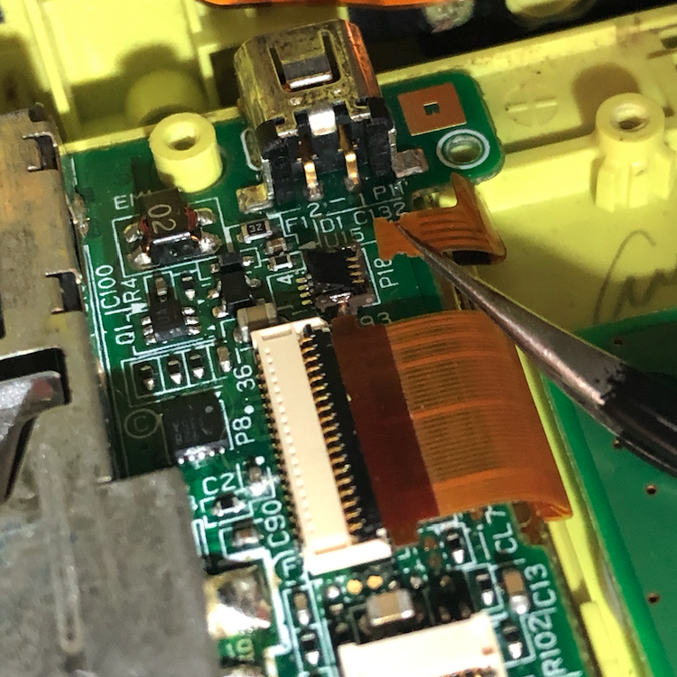

Is your bottom screen flashing instead? See this:
- A disconnected top screen will make the bottom screen flash
- A disconnected top screen will make the bottom screen flash
Description
Turning on the DSi causes the top screen to flash, then the console will shut off.May be caused by the bottom screen's power cable being damaged or disconnected.
Solution
First try reseating the power ribbon cable.
If your reseating did not fix the screen, you will have to replace your bottom screen. Try the guides for DSi and DSi XL on ifixit.